明神ヶ岳
| 日付 | 2007年4月8日（日） |
|---|---|
| 山域 | 箱根 |
| メンバー | グループ（男2女1） |
| 山行形態 | 日帰り |
| アクセス | 電車、バス |
| ルート (Map) | 仙石→矢倉沢峠→明神ヶ岳→宮城野 |
箱根外輪山の一峰・明神ヶ岳に行く。
温泉で有名な観光地。
9:40 箱根湯本駅到着。ここは一大観光地。
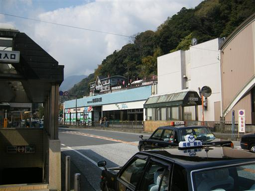
10:14 仙石バス停到着。標高660m。
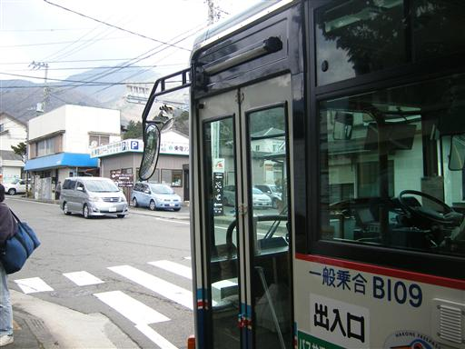
この辺りの山は高い木は無く笹原が続く。
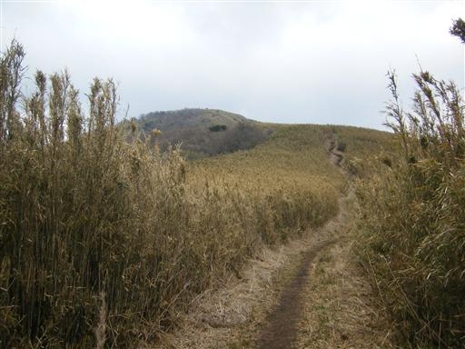
なだらかな尾根を上り下りしながら歩いていく。
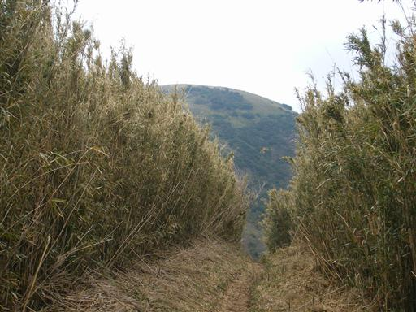
振り返ると金時山が大きく見える。
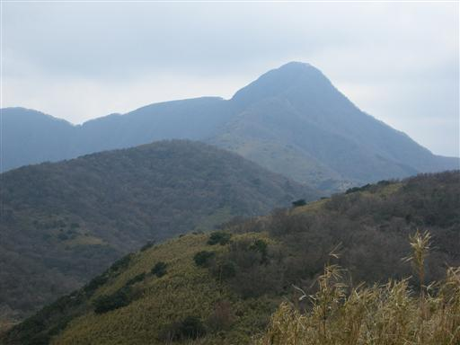
右手に明神ヶ岳山頂が見えてきた。
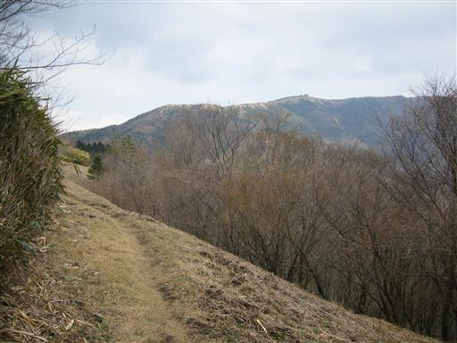
13:03 明神ヶ岳山頂到着。標高1169m。
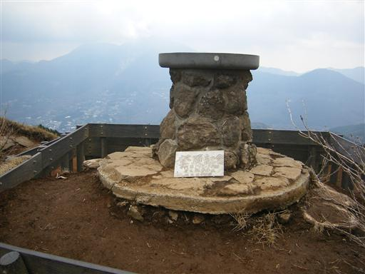
山頂からも金時山は良く目立つ。その背後に聳えるはずの富士山は今日は見えない。
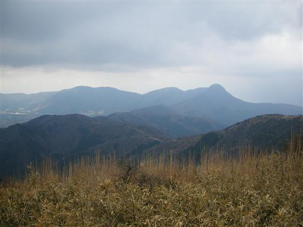
箱根の中心部・箱根山を望む。
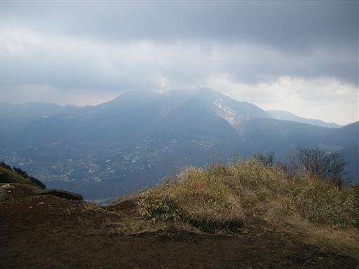
13:31 昼食をとって広い山頂を出発。
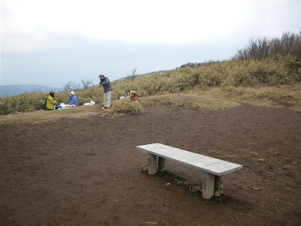
14:59 下山。標高465m。
下山後は箱根の温泉に寄る。
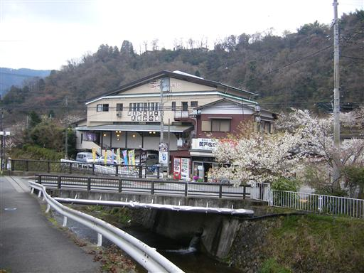
他の山行記録